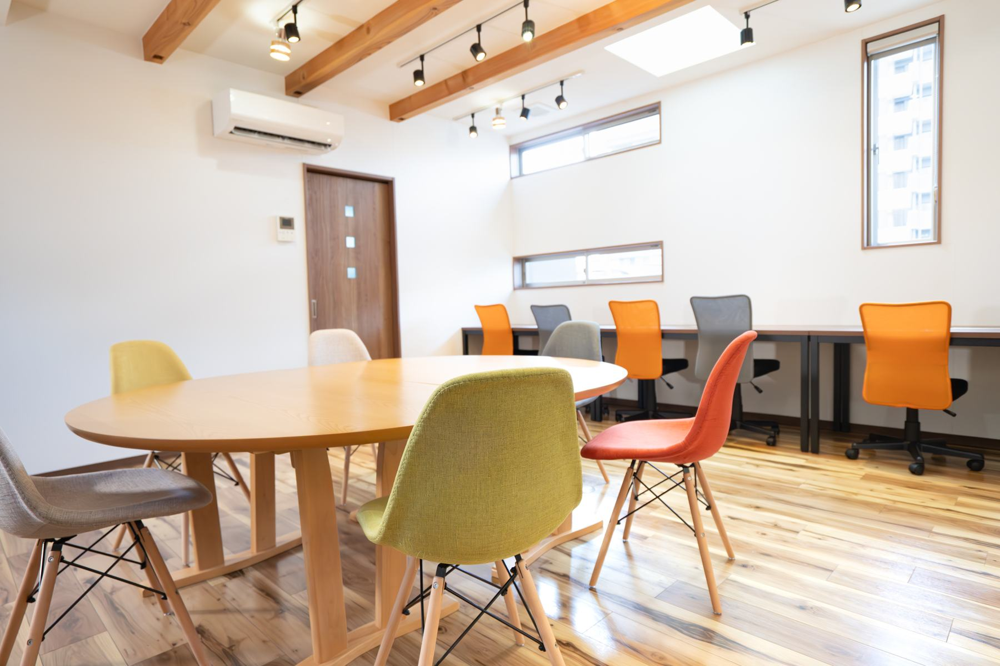

パソコン業務
- タイピング
- データ入力
- チラシ作成
- 画像加工
ITスキルを身につけたい方にも。未経験から基礎を丁寧にサポートします。
福岡市東区の就労継続支援A型事業所です。雇用契約を結んでお給料をもらいながら、自分のペースで働けます。はじめての方も、まずは見学からどうぞ。

GOATは「Greatest Of All Time（史上最高）」。
他の誰かではなく、昨日の自分を少しだけ超えていく場所です。
障がいや困難のある方が、自分らしく、安心して、誇りを持って働ける場所をつくっています。一人ひとりの持つ力を活かせる環境と支援を整え、福祉とビジネスの垣根を越えて、共生社会の実現に貢献します。
代表メッセージ・事業所の詳細を見る得意なこと・やりたいことを一緒に探します。「自分にもできる」という実感を積み重ねて、働く自信につなげます。
A型は雇用契約を結ぶ「働く場」です。最低賃金以上のお給料が支払われます。勤務時間や作業内容は相談して決められます。
日々の業務だけでなく、生活面の困りごとも相談できます。体調に合わせたお休みや短時間勤務にも対応します。
面接練習、履歴書の書き方、企業見学などをサポート。就労移行支援や地域の関係機関と連携して、長い目で働き方を考えます。
地域の企業や団体から仕事を受託しています。「地域の中で働いている」と実感できる仕事を通じて、社会とのつながりを育みます。
個性やスキルに合わせて、できることから始められます。座ってできる作業も多く、スピードより丁寧さを大切にしています。
ITスキルを身につけたい方にも。未経験から基礎を丁寧にサポートします。
シンプルで取り組みやすい作業が中心です。
提携企業での作業
実際の職場に近い環境でチームで働きます。職員が同行するので安心です。
はじめての方でも安心して始められるよう、一つずつ一緒に進めます。
お電話またはお問い合わせフォームからご連絡ください。見学・ご相談の日程を決めます。
作業の内容や雰囲気を見ていただき、ご希望やお困りごとをお聞きします。ご家族・支援者の方の同席もできます。
実際の作業を体験して、自分に合うかどうかを確かめられます。
ご利用には市区町村が発行する「障害福祉サービス受給者証」が必要です。お持ちでない方は申請をサポートします。
勤務時間などの条件を相談して決め、雇用契約を結びます。
支援計画にそって、一人ひとりに合わせたサポートを続けます。
障がいや体調に不安のある方が、雇用契約を結んで働ける福祉サービスです。職場の支援を受けながら働けて、最低賃金も保証されます。一般企業での就職に向けたステップとしても使われています。
はい。雇用契約を結ぶので、最低賃金以上のお給料が支払われます。勤務時間や日数は、ご本人と相談して無理のない形で決めます。
大丈夫です。体調や気持ちの状態に合わせて、お休みや短時間勤務にも対応します。スタッフが日々の様子を見ながらサポートします。
問題ありません。軽作業や施設外就労など、パソコン以外のお仕事もあります。パソコンを覚えたい方には基礎からお教えします。
はい。申請方法のご案内や、市役所での手続きへの同行などをサポートします。
18歳以上で、障害者手帳や医師の診断書などがある方なら、年齢や障がいの種類に関係なくご相談いただけます。
はい。箱崎駅・貝塚駅への送迎を行っています。
| 事業所名 | 就労継続支援A型事業所 GOAT |
|---|---|
| 運営法人 | Marais株式会社 |
| 事業所番号 | 4010202622 |
| 対象 | 精神障がい、知的障がい、身体障がい、発達障がいのある方など |
| 定員 | 20名 |
| 営業時間 | 月〜金 9:00〜18:00 |
| 送迎 | 箱崎駅・貝塚駅 |
| 電話 | 092-214-2786（月〜金 9:00〜18:00） |
ご本人はもちろん、ご家族や相談支援員の方からのご連絡もお待ちしています。